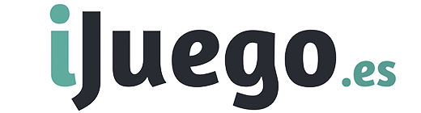

Casas de apuestas deportivas online
¿Cuáles son las mejores casas de apuestas? Las hemos probado todas y aquí te traemos nuestro ranking de las mejores casas de apuestas deportivas en España. Existen operadores para todos los gustos pero no te preocupes porque con nuestros análisis conocerás todos sus secretos y podrás elegir sin miedo a equivocarte.
Las mejores casas de apuestas en Octubre 2022
- Todas
- Cash out
- Nuevas
- Mejores cuotas
- Bizum
- Esports
- Paypal
-
1
RECOMENDADA
Codere
Codere es uno de los pioneros del juego en nuestro país. Nos permite depositar y cobrar en sus locales, y es un operador de referencia en España y América Latina.Calificación del usuario:9.6VISITAR Más detalles - Retransmisiones en directo
- Gran variedad de deportes
- Depósito y retirada en local
- Chat en vivo
- No dispone de hándicaps asiáticos
-
2

Luckia
La casa de apuestas gallega dispone de una amplia red de locales en toda España y una web con excelentes cuotas en los deportes más populares entre los apostantes.Calificación del usuario:9.5VISITAR Más detalles - Luckia TV para ver partidos en directo
- Cuotas muy atractivas
- Club VIP
- Virtual Sports
- Líneas asiáticas limitadas
-
3
Bet365
Bet365 es la gran referencia de las casas de apuestas deportivas a nivel mundial. Gran oferta de mercados, buenas cuotas, app y streaming en multitud de deportes.Calificación del usuario:9.4VISITAR Más detalles - Excelente variedad de mercados
- Servicio gratuito de partidos en directo
- Fácil de usar en dispositivos móviles
- Le falta un buscador de apuestas
-
4
REFERENTE
William Hill
Con casi un siglo de historia, la tradicional casa de apuestas británica goza de gran popularidad gracias a su completa oferta. Por algo es donde apuestan los que apuestan.Calificación del usuario:9.3VISITAR Más detalles - Excelente servicio de apuestas en directo
- Gran cantidad de mercados
- Puedes pedir #MiApuesta
- App muy completa
- Diseño de la web mejorable
-
5
LeoVegas
La casa de apuestas que mejor se adapta a los dispositivos móviles, con una excelente oferta de mercados y cuotas siempre competitivas. Un operador de referencia.Calificación del usuario:9.2VISITAR Más detalles - Excelentes cuotas
- Potente sección live
- Orientada a dispositivos móviles
- Club VIP con premios y sorteos mensuales
- Teléfono de atención al cliente de pago
-
6
Betway
Una casa de apuestas ideal para los aficionados a los eSports, también con una excelente oferta de apuestas en baloncesto o tenis... y, como no, en fútbol.Calificación del usuario:9.1VISITAR Más detalles - Apuestas en vivo a los eSports
- Teléfono de atención al cliente gratis
- Sello eCOGRA: certificado de seguridad
- Crea tu apuesta y cash out
- Sin líneas asiáticas
-
7
Paf
Desde Finlandia llega una casa de apuestas con un importante componente social. Sus cuotas siempre son buenas, y dispone de una gran oferta prematch y en vivo.Calificación del usuario:9.1VISITAR Más detalles - Gran variedad de promociones
- Vertiente social
- App imprescindible
- Apuestas express en vivo
- No ofrece retransmisiones en directo
-
8
CUOTAS TOP
Marathonbet
El 0% de margen en los partidos más destacados de La Liga, Champions, Premier, NBA y el resto de grandes competiciones hace que sus cuotas no tengan rival. Imprescindible.Calificación del usuario:9.0VISITAR Más detalles - 0% de margen: las mejores cuotas
- App disponible
- Excelente variedad de mercados
- Apuestas por teléfono
- Apariencia rudimentaria
- Sin apuestas a goleador
-
9
888Sport
888 es uno de los operadores más potentes del mundo. Excelentes cuotas para apostar en directo y una gran variedad de métodos de pago habilitados.Calificación del usuario:9.0VISITAR Más detalles - Gran variedad de promociones
- Cuotas mejoradas para determinados eventos
- Excelente variedad de eventos en vivo
- Retransmite la NBA en directo
- Ausencia de chat en directo
-
10
Sportium
Es una de las primeras casas de apuestas online en España, y cuenta con una extensa red de locales. Sportium UNO ha revolucionado la forma en que jugamos.Calificación del usuario:9.0VISITAR Más detalles - Gran oferta de deportes y mercados
- Apuesta mientras lo ves con Sportium TV
- Excelente atención al cliente
- Sportium UNO
- No ofrece líneas asiáticas
-
11
Betsson
Betsson es uno de los operadores jóvenes más pujantes. Llegó a España en 2018, y desde entonces no ha dejado de crecer con una magnífica oferta especialmente en vivo.Calificación del usuario:9.0VISITAR Más detalles - Gran variedad de mercados
- Amplia oferta de apuestas
- Apuestas en directo multivista
- Cuotas atractivas
- Escasas promociones
- No tiene app
-
12
Bethard
Lleva poco tiempo operando en España, pero se ha consolidado como un operador con una oferta de apuestas muy completa y unas cuotas altamente competitivas.Calificación del usuario:8.9VISITAR Más detalles - Buena sección de apuestas en vivo
- Gran variedad de mercados
- App para iOS y Android
- No permite depositar vía PayPal
- No hay teléfono de atención al cliente
-
13
Versus
Con gran presencia física en Murcia y Alicante, Versus es una de las pocas casas de apuestas con club VIP. Puedes gestionar tus fondos presencialmente en sus locales.Calificación del usuario:8.9VISITAR Más detalles - Depósitos y retiros en locales
- Club VIP
- Chat de atención en vivo
- No tiene app
-
14
Marca Apuestas
Una década de experiencia avala a la casa de apuestas del líder en la prensa española. Destacan sobre todo sus mercados a goleadores y apuestas especiales.Calificación del usuario:8.8VISITAR Más detalles - Streaming en MarcaApuestasTV con NBA o Bundesliga
- Apuestas especiales a diario
- Buenos mercados de goleadores
- Apuestas ocio y política
- Pocas promociones
-
15
Betfair
La única bookie que ofrece apuestas de intercambio en España. Cuenta con una excelente reputación, puedes apostar a cualquier deporte y a todo tipo de eventos.Calificación del usuario:8.7VISITAR Más detalles - Buena variedad de promociones
- Betfair Exchange, apuestas cruzadas en exclusiva
- Cash Out y Combipartido
- Servicio de streaming
- No tiene mercados asiáticos
-
16
NOVEDAD
Tonybet
Ahora Circus es Tonybet, un operador con un gran potencial y cuotas de lo más competitivas cuando queremos apostar al favorito en cualquier evento.Calificación del usuario:8.7VISITAR Más detalles - Buena oferta de mercados
- Cuotas a favorito competitivas
- Variedad de apuestas live
- Chat en vivo
- Pocos métodos de pago
- Sin apuestas a eSports
-
17
NOVEDAD
Casumo
Ha llegado a España de la mano de Kambi, lo que es sinónimo de una oferta amplia y con buenas cuotas. Buena opción para los apostantes más futboleros.Calificación del usuario:8.7VISITAR Más detalles - Buena sección de apuestas en directo
- Instant Betting en vivo
- Chat en vivo
- Buena oferta de mercados
- Sin apuestas a eSports, hípicas o galgos
- No permite depositar vía PayPal
-
18
Pastón
Poco a poco sigue creciendo hasta consolidarse como una de las casas de apuestas con una mejor oferta de España. A menudos, sus cuotas están entre las mejores.Calificación del usuario:8.6VISITAR Más detalles - Excelentes hándicaps asiáticos
- Cuotas muy atractivas
- Buena variedad de mercados en live
- No dispone de aplicación móvil
-
19
Suertia
Aunque ahora esté en manos francesas, Suertia fue una de las primeras casas de apuestas online españolas y mantiene ese espíritu aventurero. Una opción siempre interesante.Calificación del usuario:8.6VISITAR Más detalles - Gran variedad de mercados
- Cuotas siempre competitivas
- Apuestas virtuales
- Atención al cliente top
- Sin mercados asiáticos
- No ofrece apuestas a eSports
-
20
NOVEDAD

Sisal
La casa de apuestas número 1 de Italia llega a España con una amplia variedad de deportes y mercados, app e interesantes promociones para sus usuarios.Calificación del usuario:8.6VISITAR Más detalles - Promociones semanales
- Buena oferta de deportes y mercados
- Chat en vivo y teléfono gratis
- App para Android e iOS
- Pocos métodos de pago disponibles
- Sin apuestas hípicas ni galgos
-
21
NOVEDAD
Bet777
Puedes jugar en Bet777 con tu cuenta de Casino777. Una casa de apuestas española ideal para apostar en vivo y con atención al cliente vía WhatsApp.Calificación del usuario:8.6VISITAR Más detalles - Excelente sección en directo
- Buenas cuotas
- Atención al cliente vía WhatsApp
- Pocas promociones
- No tiene app
-
22
NOVEDAD
Betfred
Betfred sigue la tradición de las casas de apuestas británicas, ofreciendo muy buenas cuotas para apostar a fútbol, especialmente en partidos de La Liga española.Calificación del usuario:8.6VISITAR Más detalles - Excelentes cuotas de fútbol
- Gran variedad de promociones
- Teléfono gratis y chat en vivo
- Sin apuestas a eSports
- No tiene app
-
23
PokerStarsSports
El salón de poker online más conocido del mundo nos ofrece una muy buena oferta de apuestas, con funciones como Spin&Bet, apuestas xG y MyBet.Calificación del usuario:8.5VISITAR Más detalles - Diseño fácil, rápido e intuitivo
- Spin & Bet y apuestas xG
- Variedad de métodos de pago
- MyBet
- Pocos canales de atención al cliente
- No ofrece retransmisiones en directo
-
24
Enracha
No será la casa de apuestas británica más conocida, pero cuenta con funciones tan interesantes como las Mejoradas de Enracha o Crea tus apuestas.Calificación del usuario:8.5VISITAR Más detalles - Excelentes cuotas prematch
- Chat en vivo y teléfono gratis
- Crea tus apuestas
- Enracha mejoradas
- Pocos eventos en vivo
- No admite depósitos en sus salones
-
25
Kirolbet
Una de las casas de apuestas más importantes de Euskadi, con cuotas muy competitivas. Su app y la tarjeta Kirolbet fusionan la experiencia de juego online y física.Calificación del usuario:8.4VISITAR Más detalles - Excelentes cuotas
- Tarjeta Kirolbet
- Buena atención al cliente
- App y streaming
- No ofrece mercados asiáticos
-
26
CGM Apuestas
Pionera en el sector del casino online en España, en 2018 amplió su oferta de juego a las apuestas deportivas. Muy fácil de usar, puedes depositar en sus casinos físicos.Calificación del usuario:8.3VISITAR Más detalles - Potente sección live
- Ingresos también desde el casino
- Navegación muy cómoda e intuitiva
- No tiene app
-
27
Wanabet
De los recreativos y las tragaperras al juego online. Wanabet apareció en 2015 como una casa de apuestas con cuotas siempre competitivas y un casino que cumple las expectativas.Calificación del usuario:8.2VISITAR Más detalles - Buenos mercados de hándicaps
- Virtual sports
- App disponible
- Cuotas siempre interesantes
- No dispone de retransmisiones en directo
- Pocos medios para retirar
-
28
CB Apuestas
La casa de apuestas del popular casino barcelonés, con una amplia oferta de deportes para apostar y un excelente apartado de apuestas en vivo que se completa con su app.Calificación del usuario:8.1VISITAR Más detalles - Potente sección en vivo
- Gran variedad de deportes para apostar
- Teléfono gratuito de atención al cliente
- App de apuestas disponible
- Sin hándicaps ni totales asiáticos
-
29
NOVEDAD

iJuego
El Grupo Comar ha dado el salto al juego online con este operador donde podemos encontrar mercados poco habituales en otras bookies. Buena sección en vivo.Calificación del usuario:8.0VISITAR Más detalles - Buena sección de apuestas en vivo
- Mercados poco habituales
- Depósito en Casino Gran Vía y Aranjuez
- Cuotas siempre atractivas
- Sin eSports
- Pocos métodos de pago
-
30
Bwin
Se hizo un nombre gracias a los patrocinios deportivos, pero es una de las casas más grandes de Europa con una gran cobertura de eventos. Abre mercados con mucha antelación.Calificación del usuario:7.8VISITAR Más detalles - Buena cobertura de competiciones para apostar
- Gran servicio de apuestas en vivo
- Servicio de streaming
- Cuotas con mucha antelación
- No tiene líneas asiáticas
-
31
Interwetten
Un diseño retro que no nos impide una navegación simple en una de las casas de apuestas con más solera de Europa. Sus cuotas prematch siempre son competitivas.Calificación del usuario:7.8VISITAR Más detalles - Excelente variedad de mercados
- Gran sección de apuestas live
- Cuotas muy atractivas
- Promociones escasas
-
32
AdmiralBet
Este casino online cuenta con una casa de apuestas donde, entre otras cosas, puedes crear tu propia apuesta. Además, tienes los retiros disponibles en 24 horas.Calificación del usuario:7.6VISITAR Más detalles - Opción crea tu apuesta disponible
- Gran variedad de mercados
- Retiros en 24 horas
- Pocas promociones de apuestas
- Atención al cliente floja
-
33
Mondobets
El primer Fantasy Fútbol de España es el gran reclamo de esta casa de apuestas que en parte creció gracias a un proceso de crowdfundig.Calificación del usuario:7.4VISITAR Más detalles - Web muy intuitiva
- Buena sección live
- Mondo Tipster
- Fantasy
- Pocos métodos de pago
- Cuotas bajas
-
34
Jokerbet
En toda España hay unos 200 salones de juego Jokerbet, una casa de apuestas que no deja de crecer como lo hacen unas cuotas que suelen estar en el top-5.Calificación del usuario:7.4VISITAR Más detalles - Abundantes mercados y opciones a las que apostar
- Sección de apuestas en directo muy completa
- JOKER-5, un producto único
- Depósito en locales y Bizum
- Pocos métodos de pago
-
35
NOVEDAD
Mr Green
El primo verde de William Hill ha sido uno de los últimos operadores de apuestas en llegar a España, y no ha tardado en destacar gracias a su magnífica oferta.Calificación del usuario:7.2VISITAR Más detalles - Excelentes cuotas live y prematch
- Función Bet Builder
- Navegación muy intuitiva
- Buena oferta de apuestas
- Pocos métodos de pago
- Sin Virtual Sports ni eSports
-
36
NOVEDAD
Winamax
Si además de apostar te gusta el poker, esta es tu bookie. Podemos editar una apuesta añadiendo selecciones, y ofrece servicio de streaming para no perdernos nada.Calificación del usuario:7.2VISITAR Más detalles - Edita tu apuesta y añade selecciones
- Club VIP
- Winamax TV
- Cuotas siempre competitivas
- Sin apuestas a eSports
- No hay chat ni teléfono
-
37

RETAbet
Cuenta con más de 10 años de experiencia y un potente apartado de apuestas en directo desde el que puedes seguir los eventos vía streaming. Depósito y retiros en local.Calificación del usuario:7.0VISITAR Más detalles - Buena sección live
- Servicio de streaming
- Tarjeta RETAbet
- Buena red de locales
- Pocos métodos de pago
- La navegación puede ser compleja
-
38
eBingo
Mucho más que un bingo online. Puedes depositar y cobrar en sus salones físicos, y cuenta con una muy buena sección de apuestas en directo.Calificación del usuario:6.7VISITAR Más detalles - Apuestas a eSports
- Deposita y retira en salones físicos
- Potente sección de apuestas en vivo
- Chat y teléfono gratis de atención al cliente
- No tiene app
-
39
Juegging
Juegging es una casa de apuestas bastante completa, con cuotas que pueden dar la sorpresa y una buena oferta de deportes y eventos. App para iOS y Android.Calificación del usuario:6.4VISITAR Más detalles - Apartado de incidencias deportivas
- Buena sección live
- App disponible
- Deporte en directo en JueggingTV
- Métodos de pago muy limitados
Una casa de apuestas pionera en la fusión de apuestas físicas y apuestas online. Buenas cuotas, streaming y variedad de mercados.
Buenas cuotas y una extensa red de locales físicos. Sus más de 30 años en el sector la avalan como una casa de apuestas top.
Con más de 22 millones de jugadores en todo el mundo, Bet365 es la casa de apuestas más popular del planeta. Descubre por qué
Pide tu apuesta, mejora la cuota que prefieras y aprovecha su excelente variedad de mercados en una bookie de referencia mundial.
Una casa de apuestas pensada para jugar desde el móvil, con excelentes cuotas y una gran variedad de ofertas y mercados.
Una casa de referencia en Europa, pionera en las apuestas a eSports y con una excelente oferta de mercados prematch y en vivo.
Una casa de apuestas especial, con fines sociales, una gran cantidad de promociones y concursos exclusivos con grandes premios.
Gran variedad de apuestas prematch y en vivo con algunas de las mejores cuotas que podemos encontrar en el mercado.
La plataforma de juego online más completa, con una potente sección de apuestas en vivo y la garantía de un gigante como 888.
Una de las grandes casas de apuestas españolas que combina su marca online con más de 2.000 locales físicos de apuestas.
Un gigante del juego en Europa, que tiene una gran oferta de cuotas, mercados y deportes para apuestas prematch y en vivo.
Una casa de apuestas que llega pisando fuerte, con app propia y una excelente sección de apuestas en vivo para jugar a lo grande.
Versus une las apuestas físicas en su extensa red de locales con las apuestas online. De las pocas bookies con club VIP
Siguiendo la tradición británica, el diario más leído en España cuenta con una casa de apuestas que triunfa entre los apostantes.
Casa de apuestas top a nivel mundial, con interesantes promociones. La única que ofrece apuestas cruzadas en España.
Tonybet llega a España tras comprar Circus ofreciendo continuidad, reforzando aspectos como la atención al cliente y cuotas en vivo y prematch con mucho valor.
Una casa de apuestas con una excelente sección de apuestas en directo, que nos ofrece cuotas muy interesantes y una gran variedad de mercados prematch y live.
Una casa de apuestas para todo tipo de jugadores, con gran variedad de mercados, cuotas siempre competitivas y buena sección live.
Una de las primeras casas de apuestas online españolas, ideal para dar tus primeros pasos en este apasionante mundo.
Una de las casas de apuestas italianas más importantes de Italia llega a España con buenas promociones, una gran oferta de eventos y deportes con cuotas muy competitivas.
Amplia oferta de eventos y mercados para apostar y muy buenas cuotas. Puedes utilizar tu perfil en Casino777 para apostar sin registrarte de nuevo.
Una casa de apuestas con muy buenas cuotas para apostar a fútbol, aunque siempre podemos encontrar apuestas con valor a otros deportes.
La casa de apuestas de PokerStars, con un producto exclusivo como Spin&Bet al que se suma una buena oferta de promociones.
Una casa de apuestas con excelentes cuotas para hacer tus apuestas prematch a cualquier deporte. Puedes crear tus propias apuestas.
Mantiene las excelentes cuotas que encontramos en sus locales de apuestas físicos, y podemos participar en sus porras.
Muy fácil de utilizar y con una sección en vivo muy interesante. Puedes depositar físicamente desde el casino.
La experiencia del Grupo RFranco en el mundo online. Buenos mercados asiáticos y una oferta de lo más variada para apostar.
Una gran variedad de deportes y mercados para apostar prematch o en vivo, con cuotas bastante competitivas. Ahora, también con app.
Excelente sección de apuestas en vivo, con la posibilidad de depositar físicamente en sus casinos y mercados que difícilmente encontramos en otras casas de apuestas.
Uno de los clásicos del sector, con una potente sección de apuestas en directo que incluye servicio de streaming y gran oferta de mercados.
Pionera en el juego online, sus cuotas siempre son muy interesantes y cuenta con una buena sección de apuestas en directo.
Amplia cantidad de deportes, eventos y mercados para apuestas prematch y live, puedes crear tus apuestas.
Una casa de apuestas diferente, con un juego único en España como el Fantasy Fútbol y que nos permite convertirnos en propietarios a través del crowdfunding.
Gran experiencia de juego, especialmente a la hora de apostar en vivo, y con buenas promociones todas las semanas.
Una nueva casa de apuestas que llega a España con gran variedad de mercados y excelentes cuotas prematch y en directo.
El gigante francés del poker también nos ofrece apuestas deportivas. No te pierdas los eventos en vivo a través de Winamax TV y suma puntos VIP.
Una buena oferta de apuestas deportivas acompañada de la Tarjeta RETAbet, que nos permite gestionar nuestra cuenta desde sus locales y terminales.
Una casa de apuestas poco conocida pero con una gran oferta de apuestas, especialmente en vivo, con mercados asiáticos o apuestas a córners y tarjetas.
Buena casa para apostar en directo, también desde su app. La única casa de apuestas que ofrece pilota valenciana.
TOP 10 casas de apuestas en 2022
- Codere - La casa de apuestas española nº1
- Luckia - La mejor red de locales de apuestas
- Bet365 - La casa de apuestas más grande del mundo
- William Hill - Líderes en apuestas deportivas
- Betway - La mejor para apostar a e-Sports
- Paf - Una casa de apuestas con una gran vertiente social
- Betsson - Ideal para principiantes y profesionales
- Marathonbet - Las mejores cuotas. ¡0% de margen!
- 888Sport - La plataforma de juego online más completa
- Bethard - Sobresale por la calidad de sus cuotas
1. Codere
Codere es una de las casas de apuestas más importantes de España y de América Latina, donde también cuenta con una fuerte presencia. Es uno de los operadores que dieron el salto del mundo de las máquinas recreativas al juego online. Dispone una extensa red de locales físicos a lo largo y ancho de la geografía española desde los que también podemos gestionar nuestra cuenta de juego online gracias a la Tarjeta Codere. También cotiza en bolsa.
2. Luckia
Luckia es una de las casas de apuestas con un crecimiento más rápido en España. Gran parte de su éxito se debe a la combinación del negocio online con el presencial, ya sea en locales de apuestas físicos o con máquinas en establecimientos hosteleros. Tenemos una gran oferta de eventos a los que apostar, y un amplio abanico de mercados disponibles. Las promociones que nos ofrece tampoco están mal.
3. Bet365
Cualquier apostante ha oído hablar alguna vez de Bet365, una de las casas de apuestas de referencia en Europa y en gran parte del mundo. Sus cuotas se suelen colar entre las más altas del mercado, las apuestas en vivo son uno de sus puntos fuertes y goza de un gran prestigio. Un operador a tener en cuenta tanto para apostantes novatos que buscan iniciarse en una casa de apuestas muy completa como para los más veteranos.
4. William Hill
William Hill es uno de los operadores más importantes del mundo, un operador global. En su apartado de apuestas deportivas encontramos una amplia oferta de deportes y mercados que no dejan de aumentar, y siempre puedes aprovechar para pedir #MiApuesta. Tiene promociones muy interesantes, y una de las aplicaciones de apuestas más completas que encontramos. Una bookie de referencia.
5. Betway
Cuenta con una buena oferta de deportes para apostar, destacando por encima de todos los eSports. De hecho, es una de las bookies que más fuerte han apostado por ellos. Además, tenemos cuotas muy interesantes, especialmente para competiciones como la NBA o la NFL. Si los mercados que te ofrece no te convencen, siempre puedes aprovechar la función crear tu apuesta para añadir las variables que te interesen.
6. Paf
Es una casa de apuestas con cierto componente social, pues dona sus ganancias a entidades benéficas. Las cuotas para cualquier deporte son muy competitivas, y como no podía ser de otro modo en una casa de apuestas Kambi tenemos una amplia selección de deportes y mercados a los que apostar. Su app es muy interesante, con juegos y promociones que nos pueden ayudar a obtener más ganancias.
7. Betsson
El gigante sueco de las apuestas nos ofrece una página muy fácil de utilizar, con una navegación intuitiva y una excelente oferta tanto de mercados (especialmente hándicaps) como de cuotas, a menudo entre las mejores que podrás encontrar. Un diseño muy intuitivo, una navegación de lo más ágil y unas promociones que bien utilizadas pueden ser muy beneficiosas para el usuario.
8. MarathonBet
Una de las casas de apuestas de referencia gracias a su 0% de margen, ofreciéndonos las mejores cuotas para las grandes ligas europeas, como La Liga o la Premier League, y competiciones como la Champions League, NBA o NFL, las más populares entre los apostantes medios. Dominadora en el mercado inglés, ha apostado por el patrocinio de equipos de fútbol como el Sevilla o el Manchester City.
9. 888sport
Hablar de 888Sport es hablar de uno de los grandes colosos del juego online a escala mundial, con el sello de 888Holdings. Es uno de los operadores de apuestas deportivas más completos de Europa, y en España encontramos una amplia selección de mercados de apuestas con excelentes cuotas que compiten de tú a tú con las de cualquier casa de apuestas. Podrás apostar a cualquier evento que puedas imaginar. Todo ello acompañado de una navegación de lo más intuitiva.
10. Bethard
Bethard es una de las casas de apuestas más pujantes no solo en España, sino en toda Europa. Ha sabido llegar a un gran número de apostantes gracias a una navegación muy intuitiva y una buena oferta de mercados. Pero si hay algo que destaca de Bethard son unas cuotas tan competitivas que son capaces de hacerle frente a las de bookies con más trayectoria. Tiene un chat de atención al cliente 24 horas e incluye casino en su app.